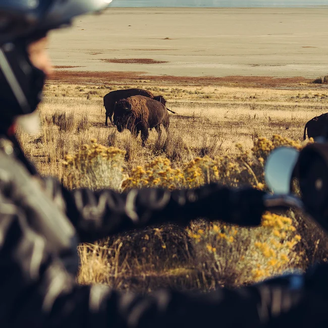

O objetivo deste novo site sobre Harley-Davidsons é oferecer uma experiência única para os entusiastas das motocicletas. Diferente do site original das harleys, criado por Luis Eduardo, nossa intenção é trazer uma abordagem original e autêntica, sem a intenção de replicar do site original. Nosso foco é apresentar uma perspectiva diferenciada sobre o universo das Harley-Davidsons, explorando sua história, modelos emblemáticos e cultura associada. Buscamos criar uma interface intuitiva e cativante, destacando informações relevantes sobre os diferentes modelos e as últimas novidades do mundo das Harley-Davidsons. Além disso, nosso objetivo é construir uma comunidade vibrante de entusiastas, onde eles possam compartilhar suas histórias, dicas, fotos e eventos relacionados às motocicletas. Nosso site é uma celebração da paixão e herança das Harley-Davidsons, com uma abordagem única e original.
Luis Eduardo Muniz Gomes, aos 23 anos, é um militar apaixonado por motos. Sua paixão pelo mundo das duas rodas o levou a mergulhar no universo das motocicletas, em especial nas emblemáticas Harley-Davidsons. Como entusiasta dedicado, Luis Eduardo busca constantemente aprender mais sobre essas máquinas lendárias, explorando sua história e características técnicas.